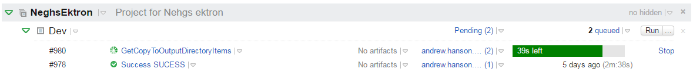
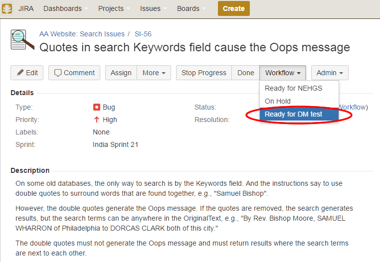
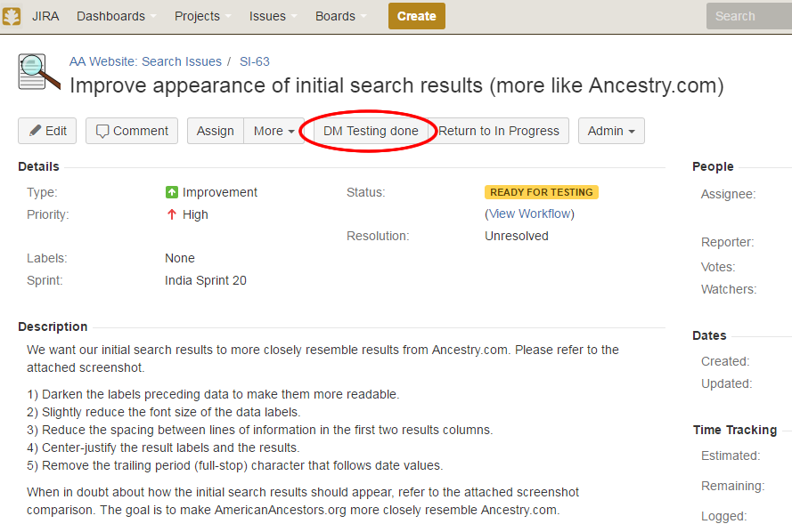
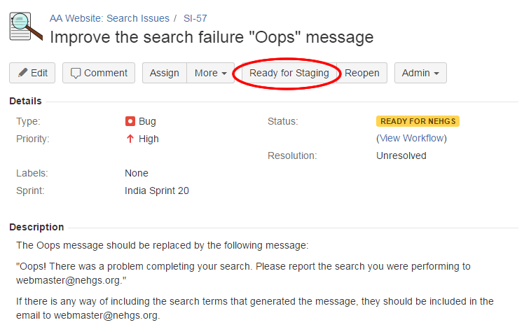
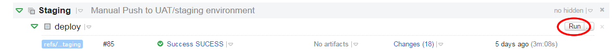
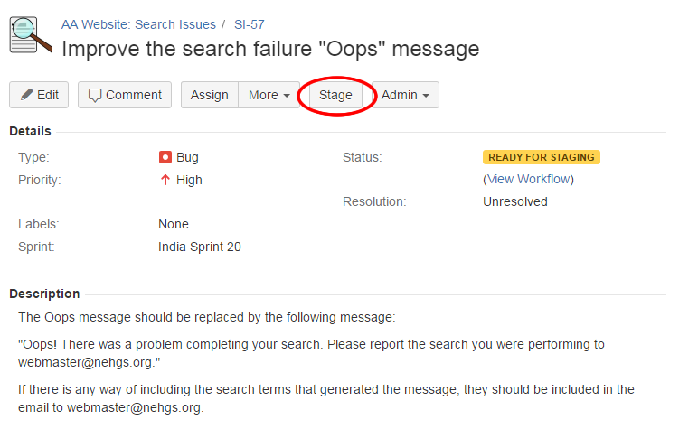
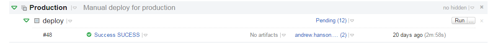

Getting Most Recent Production Branch
> git checkout production
Switched to branch 'production'
…
> git pull
From https://github.com/NEHGS/NEGHS
Updating 35bbf7c..4037964
I Don't Have a Production Branch!
>git branch production --track origin/production
Opening a New Branch (Using Production as Parent)
> git checkout production
Switched to branch 'production'
…
> git checkout -b WB-46-Demo-Ticket
Switched to a new branch 'WB-46-Demo-Ticket'
Working on Code
> git commit -m 'WB-46 Demo Commit'
Pushing to Development
> git push -u origin WB-46-Demo-Ticket
Merge Feature Branch onto Master
> git fetch
…
> git checkout master
Switched to branch 'master'
> git merge WB-46-Demo-Ticket
From https://github.com/NEHGS/NEGHS
* branch WB-46-Demo-Ticket -> FETCH_HEAD
Push Master Branch Back to Remote
> git checkout master
Switched to branch 'master'
> git push origin HEAD
To https://github.com/NEHGS/NEGHS
* branch WB-46-Demo-Ticket -> FETCH_HEAD
TeamCity will automatically build when it detects changes to Master branch
One build per committer
Missed a production push?
>git rebase production
Only if you haven't pushed the branch to remote yet
Code for the feature should now be deployed on DWEB
If the ticket passes testing on DWEB by Datamatics
If the ticket passes testing on DWEB by NEHGS
If ticket fails testing
Resume work on the local branch and repeat "Local Environment" and "Development Environment" steps
Individual testing on tickets on remote environment
Regression & Integration testing of a full slate of tickets
By end of Day 8 of sprint, a slate of tickets in "Ready for Staging" should be selected for that sprint’s production push
Check that all feature branches are based off the most recent production commit
> git fetch
> git rev-parse production
4037964046dac94e18cc4b77aad9df59e69ff4fa
> git merge-base WB-46-Demo-Ticket production
4037964046dac94e18cc4b77aad9df59e69ff4fa
If the commit hashes do not match, the feature branch must be rebased onto the most recent production branch
Merge Feature Branch onto Staging
> git fetch
…
> git checkout staging
Switched to branch 'staging'
> git merge WB-46-Demo-Ticket
From https://github.com/NEHGS/NEGHS
* branch WB-46-Demo-Ticket -> FETCH_HEAD
Repeat this step for all candidate tickets
Push Staging Branch Back to Remote
> git checkout staging
Switched to branch 'staging'
> git push origin HEAD
To https://github.com/NEHGS/NEGHS
Manually run TeamCity deploy onto SWEB
Set status of all deployed tickets to Staged
Something isn't working
> git log --oneline
446908b WB-46 Demo commit
…
> git revert 446908b -m 1
Code push on Day 10-11 of Sprint
Merge staging onto production as a single commit
> git checkout production
Switched to branch 'staging'
> git pull origin staging
…
> git push origin HEAD
To https://github.com/NEHGS/NEGHS
Manually run TeamCity deploy onto Production
Success!
If actually success, send a more detailed email about the changes made to DL Membership
Mark all staged tickets as Done